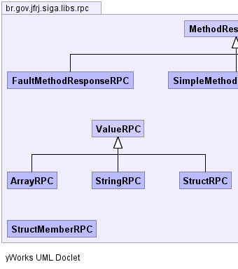
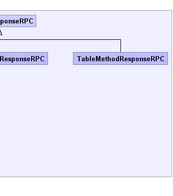

|
|||||||||
| PREV PACKAGE NEXT PACKAGE | FRAMES NO FRAMES | ||||||||
| Class Summary | |
|---|---|
| ArrayRPC | É a representação de uma estrutura de Array RPC |
| FaultMethodResponseRPC | É uma resposta RPC a ser enviada ao cliente em caso de erro Exemplo de uso: // Cria a resposta FaultMethodResponseRPC erro = new FaultMethodResponseRPC(); erro.set(0, "isto é uma mensagem de erro" ) // atribui a resposta no formato XML ao retorno setRespostaXMLStringRPC(erro.toXMLString()); |
| MethodResponseRPC | Formata uma estrutura em formato XML objetivando uma resposta RPC - (vide subclasses)
a forma de preenchimento da resposta depende da subclasse. |
| SimpleMethodResponseRPC | É uma resposta RPC simples no formato chave->valor Exemplo de uso: // cria e prepara os parâmetros de retorno HashMap parRet.put("param1", "valor1"); parRet.put("param2", "valor2"); ... |
| StringRPC | É a representação de um valor de String RPC |
| StructMemberRPC | É a representação de um valor de um membro de Struct RPC |
| StructRPC | É a representação de uma Struct RPC |
| TableMethodResponseRPC | É uma resposta RPC no formato de tabela
Exemplo de uso: // Cria a resposta TableMethodResponseRPC tabela = new TableMethodResponseRPC(); // linha 1 HashMap linha1.put("coluna1", "valor1-1"); linha1.put("coluna2", "valor1-2"); ... |
| ValueRPC | É a repersentação abstrata de um tipo RPC |
|  |  |
|
|||||||||
| PREV PACKAGE NEXT PACKAGE | FRAMES NO FRAMES | ||||||||